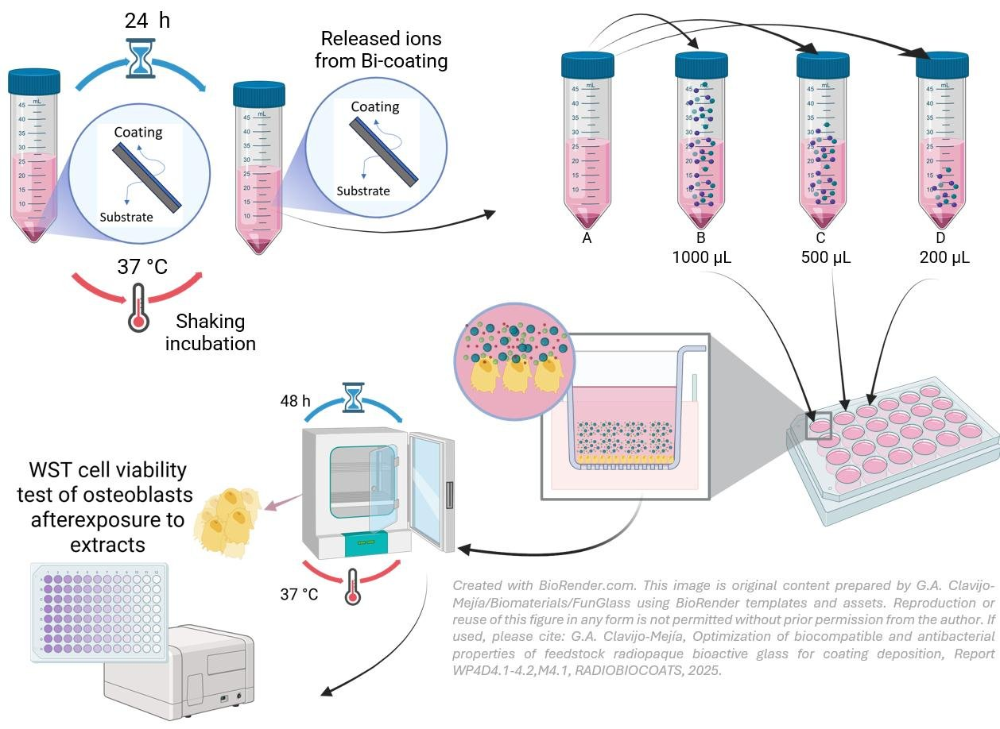
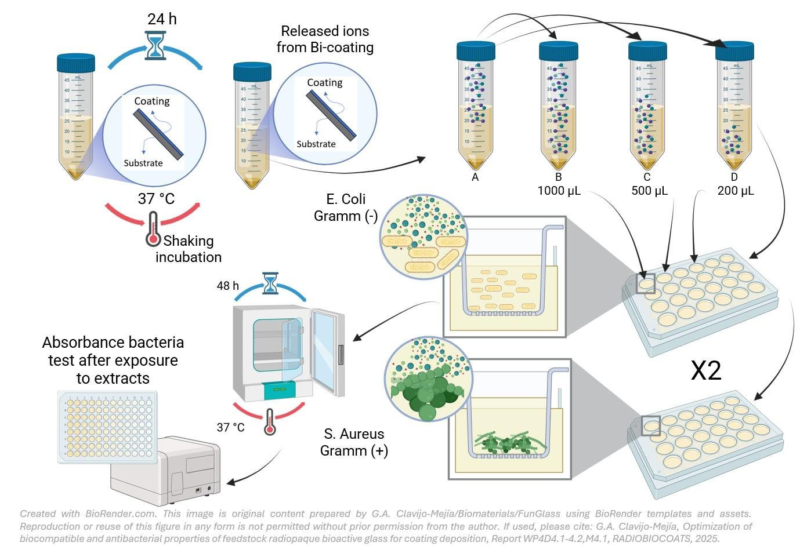
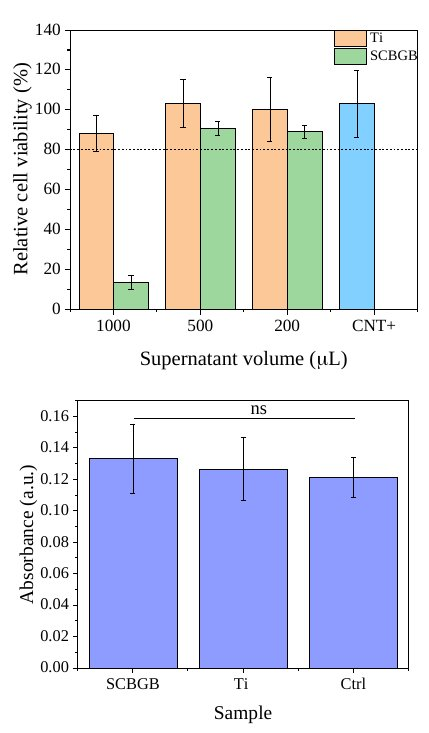
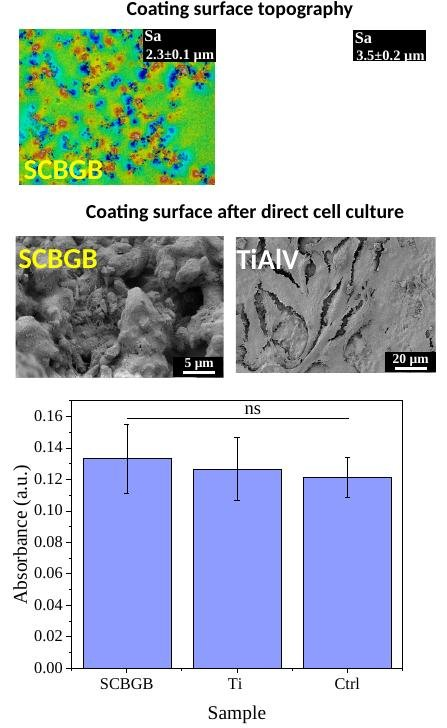
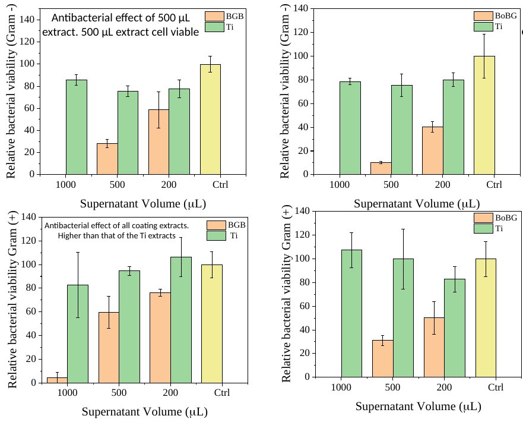
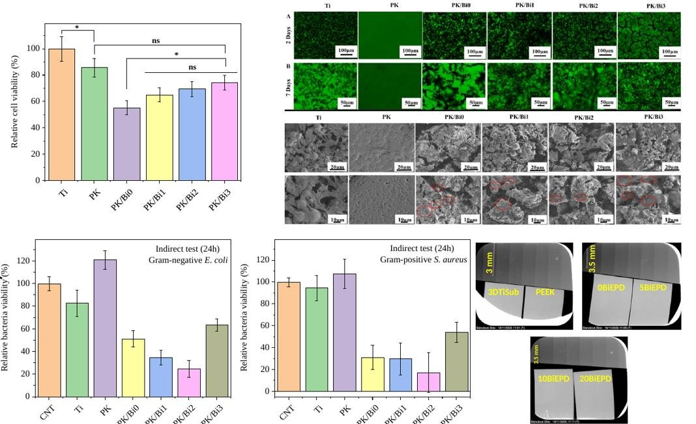

In vitro tests of powders and coatingsEnsayos in vitro de polvos y recubrimientos
Cell and antibacterial tests compare the silicate (Bi-45S5) and borate (Bi-13-93B3) glasses, first as powders and then as coatings.Los ensayos celulares y antibacterianos comparan los vidrios de silicato (Bi-45S5) y de borato (Bi-13-93B3), primero como polvo y después como recubrimiento.
SummaryResumen
| FormForma | GlassVidrio | Bioactivity (SBF)Bioactividad (SBF) | Cells (MG-63)Células (MG-63) | Bacteria (E. coli, S. aureus)Bacterias (E. coli, S. aureus) |
|---|---|---|---|---|
| PowderPolvo | Bi-45S5 | Apatite forms in SBF; Bi2O3 slightly slows it.Se forma apatita en SBF; el Bi2O3 la ralentiza ligeramente. | Biocompatible extracts.Extractos biocompatibles. | Antibacterial activity.Actividad antibacteriana. |
| PowderPolvo | Bi-13-93B3 | All compositions form an apatite-like layer in 7 days.Todas las composiciones forman una capa tipo apatita en 7 días. | —— | Direct agar test (below).Ensayo directo en agar (abajo). |
| APSAPS | Bi-45S5 | —— | Extracts ≥ 78 % viability; direct growth like titanium.Extractos ≥ 78 % de viabilidad; crecimiento directo como en titanio. | Strongest effect on S. aureus.Mayor efecto frente a S. aureus. |
| APSAPS | Bi-13-93B3 | —— | 1000 and 500 µL extracts reduce viability.Los extractos de 1000 y 500 µL reducen la viabilidad. | Effect at the highest extract volumes.Efecto con los mayores volúmenes de extracto. |
| SpraySpray | Bi-45S5 | —— | 500 µL extract non-toxic; direct growth like titanium.Extracto de 500 µL no tóxico; crecimiento directo como en titanio. | 500 µL extract active against Gram − and +.Extracto de 500 µL activo frente a Gram − y +. |
| SpraySpray | Bi-13-93B3 | —— | —— | All extracts active against Gram − and +.Todos los extractos activos frente a Gram − y +. |
| EPDEPD | PEEK/Bi-13-93B3 | —— | MG-63 activity rises with Bi2O3.La actividad MG-63 aumenta con el Bi2O3. | Lowest viability at ~10 wt% Bi2O3.Menor viabilidad con ~10 % de Bi2O3. |
Powder results for Bi-45S5 come from the papers inLos resultados de polvo de Bi-45S5 proceden de los artículos de Ceram. Int. 2024 andy Ceram. Int. 2025; borate powder bioactivity comes fromla bioactividad del polvo de borato procede de Ceram. Int. 2026.
MethodsMétodos
Coated samples are UV-sterilized and immersed in culture medium at 37 °C to obtain extracts. MG-63 osteoblast-like cells are exposed to the extracts (indirect test) or seeded at 50,000 cells directly on the coating (direct test), and WST-8 measures their metabolic activity. E. coli ATCC 25922 and S. aureus ATCC 25923 grow in the extracts, and absorbance measures their viability.Las muestras recubiertas se esterilizan con UV y se sumergen en medio de cultivo a 37 °C para obtener extractos. Las células MG-63 de tipo osteoblasto se exponen a los extractos (ensayo indirecto) o se siembran 50 000 células directamente sobre el recubrimiento (ensayo directo), y el WST-8 mide su actividad metabólica. E. coli ATCC 25922 y S. aureus ATCC 25923 crecen en los extractos, y la absorbancia mide su viabilidad.




Powders: silicate and boratePolvos: silicato y borato


CoatingsRecubrimientos
Plasma spray (silicate and borate)Proyección por plasma (silicato y borato)


Spray coating (silicate and borate)Spray coating (silicato y borato)






Electrophoretic deposition (borate)Deposición electroforética (borato)



Plasma sprayProyección por plasmaSpray coatingSpray coatingElectrophoretic depositionDeposición electroforéticaRadiopacityRadiopacidad